Karta Model: přehled - pohledy, průzkumník a panel
Karta Model v kostce: šest oblastí pro jeden model - prohlížení a kontrola, modelování, UV, váhy, malování textur a animace - a v každé stejné pohledy, průzkumník scény, panel vpravo a časová osa. Model se kreslí tak, jak ho kreslí hra; myš, klávesy a rozvržení se řídí 3ds Max nebo Blenderem, podle vaší volby.
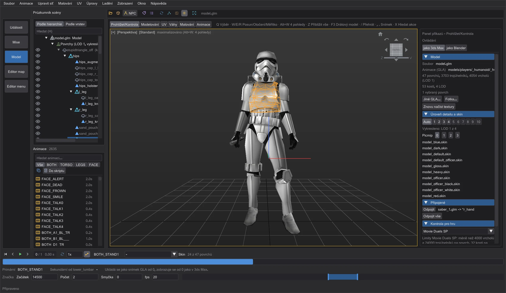
Model otevřete jako dřív (NPC, .glm, .pk3). Karta začíná v Prohlížet/Kontrola (Karta Model: prohlížení a kontrola); řada oblastí nad pohledy přepíná na Modelování (Karta Model: modelování a rekvizity pro mapu), UV (Karta Model: vytvoření UV), Váhy (Karta Model: Weights), Malování (Karta Model: malování textur) a Animace (Karta Model: panel oblasti Animace). Pohledy, průzkumník scény a časová osa (Karta Model: časová osa) jsou v každé oblasti stejné a póza běží dál, zatímco pracujete. Model se načte do vlastního dokumentu se všemi úrovněmi detailu; nezměněný model dává přesně stejný obraz jako dřív (ověřeno s každým modelem v models/players z Jedi Academy, Jedi Outcast a Movie Duels).
Více modelů na kartách#
Nad pohledem má každý otevřený model kartu s názvem jako kyle/model.glm (složka a soubor); řádek se objeví, jakmile je otevřen druhý model nebo jsou ve schránce plochy - s jedním modelem vypadá karta jako dosud. Kliknutí na kartu přepne na tento model; každá karta si ponechá vše ze svého modelu: soubor, GLA a animaci s aktuálním snímkem, výběr, historii zpět, zásobník modifikátorů a doprovodný soubor, rig a control rig, malbu, časovou osu, kameru a pohledy. +, Ctrl+O a Otevřít na nové kartě ve skupině Model otevřou další model na nové kartě - soubor modelu nebo model ze souborů hry. Už otevřený model se neotevře dvakrát: aktivuje se jeho karta. Importovat nahradí jako dosud model aktivní karty. x karty ji zavře; při neuložených změnách se nejdřív zeptá a při ukončení se zeptá každý model s neuloženými změnami. Poslední karta nezmizí, zůstane prázdná. Pravé tlačítko na kartě: Zavřít kartu, Zavřít ostatní karty.
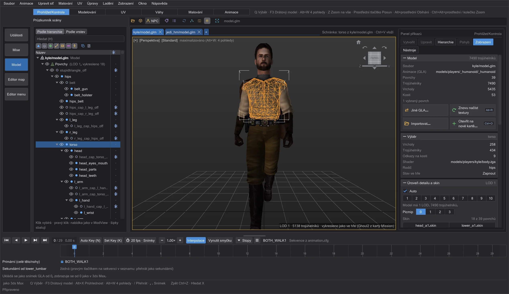
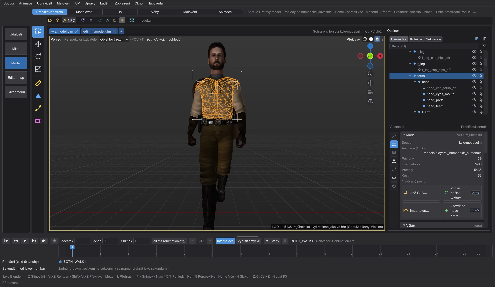
Kopírování ploch z jednoho modelu do jiného: klikněte pravým tlačítkem na plochu v Průzkumníku scény a zvolte Kopírovat (Ctrl+C zkopíruje vybrané plochy). Řádek karet vpravo ukazuje, co je ve schránce. Ve stejném nebo jiném modelu Vložit jako potomka této v nabídce pravého tlačítka plochy (Ctrl+V: pod vybranou plochu) vloží plochy jako její potomky, jako jeden krok zpět tohoto modelu. Váhy přejdou na stejnojmenné kosti; kost, kterou model nemá, předá svou váhu nejbližší existující rodičovské kosti - zpráva každou uvede, nic se tiše neztratí. Přejdou všechny LOD (přebývající vypadnou, chybějící se vyplní nejhrubším), stejně jako shader, který zdroj ukazoval, a zásobník modifikátorů; existující název dostane _1, _2. Limity hry (vrcholy na plochu, 32 kostí na plochu, 4 váhy na vrchol) se zkontrolují a uvedou ve zprávě. Do rekvizity .md3 se plochy vloží pevně. V oblasti Animace Ctrl+C a Ctrl+V kopírují a vkládají pózu, jako v Blenderu.
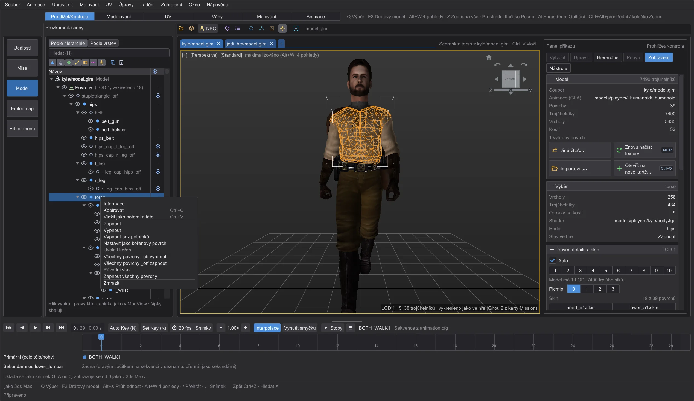
Průzkumník scény#
Průzkumník scény ukazuje povrchy (Podle hierarchie nebo Podle vrstev), tagy a kosti kostry; Hledat (H) filtruje podle názvu. Šedé povrchy se nekreslí. Pravé tlačítko funguje jako v ModView a jako ve hře (G2_SetSurfaceOnOff, G2_SetRootSurface): Vypnout skryje povrch, jeho potomci zůstanou, Vypnout bez potomků skryje celou větev, Nastavit jako kořenový povrch kreslí jen tuto větev, Původní stav vše vrátí. Řádek skinu name,*off vypne povrch stejně. Kosti s oranžovou tečkou hledá kód hry.
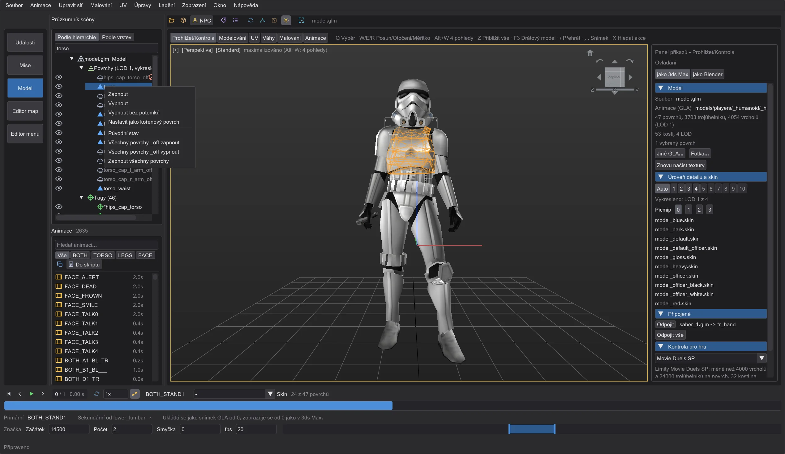
Pravým tlačítkem na tag (třeba *r_hand) nebo kost a Připojit model připojí model z archivů hry - meč, zbraň, hlavu - jako G2API_AttachG2Model: na tagu sleduje trojúhelník tagu, na kosti kost. Skupina Připojené je vypíše a znovu odpojí.
Jeden strom pro všechno: nahoře model, pod ním Povrchy s hierarchií, Tagy s připojenými modely, Kosti, úchyty control rigu a sekvence z animation.cfg - stejný strom v každé oblasti karty. Kliknutí na sekvenci ji přehraje jako primární (zámek s P), pravé tlačítko ji zamkne jako sekundární (S); červená výstraha označuje sekvence, jejichž snímky leží za koncem GLA. Seznam pod uzlem ukáže jen jednu skupinu (BOTH_, TORSO_, LEGS_, FACE_), dvě tlačítka vedle zkopírují název a otevřou Do skriptu (také: dvojklik). Hledat (H) filtruje všechny řádky podle názvu.
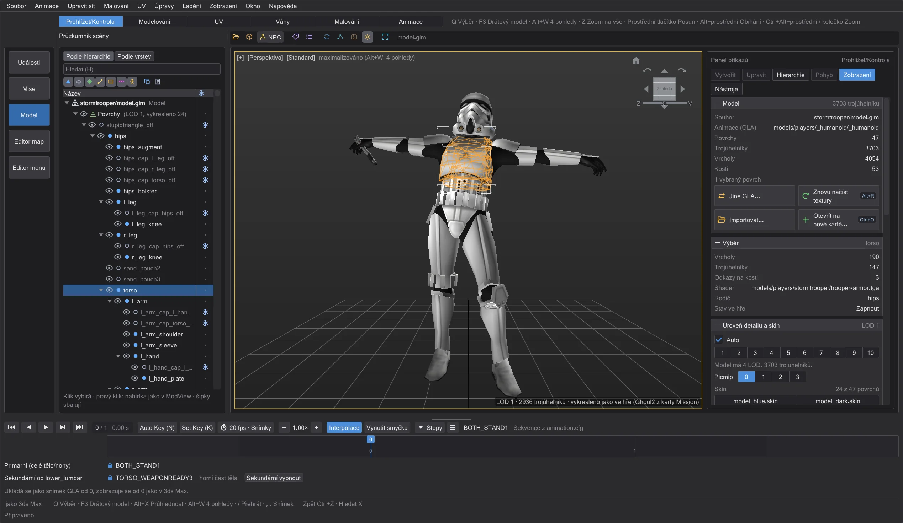
Řádek se řídí režimem ovládání. jako 3ds Max (průzkumník scény): šipka pro sbalení, oko a symbol stojí přímo před názvem, každá úroveň je odsazena o jeden symbol; sloupec Zmrazeno (vločka) zmrazuje. Záhlaví sloupců lze táhnout do šířky a kliknutí na Název řadí vzestupně, sestupně a zpět na pořadí hierarchie. Řada symbolů pod hledáním zobrazuje nebo skrývá druhy řádků (povrchy, záslepky, tagy, kosti, sekvence, připojené modely, úchyty rigu; Ctrl+klik: jen tento druh). jako Blender (outliner, přepínač Hierarchie / Kolekce): strom vlevo, oko a šipka „lze vybrat“ v pevných sloupcích vpravo, druhy ve vyskakovacím panelu Filtr vedle hledání (s Kosti jako plochý seznam a Řadit abecedně). Strom se nikdy neposouvá do strany: hluboké kosti se srazí blíž k sobě a název, který se nevejde, končí „...“ a celý stojí v bublině spolu s informacemi o řádku (vrcholy, trojúhelníky, shader, rodič, stav ve hře - také jako Informace v nabídce pravého tlačítka). Shift+klik vybere všechny povrchy od naposledy kliknutého po tento. Před povrchem: tečka = zapnuto, kroužek = vypnuto, přeškrtnutý kroužek = vypnuto i s potomky, kotva za názvem = kořenový povrch.
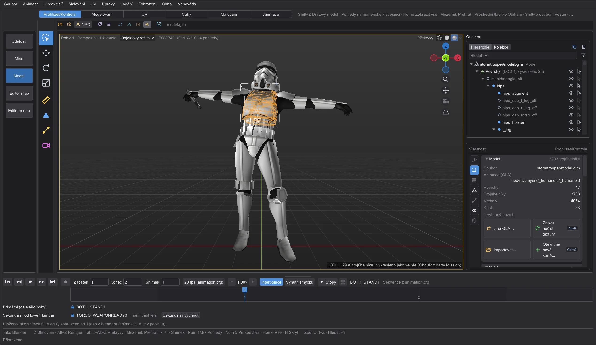
Podle vrstev (jako Blender: Kolekce) řadí stejné řádky do vrstev: Tělo, Záslepky (_off), Tagy, Kosti, Připojené a další úrovně detailu (LOD 2, LOD 3 ...). Oko vrstvy skryje všechny její řádky jen v pohledu - hra zůstává, jak je; co hra kreslí, se dál přepíná zapnutím/vypnutím povrchů. Vločka (jako Blender: šipka) zmrazí: zmrazené zůstává viditelné, kliknutí ve stromu je vybere jen jako 3ds Max (jako Blender ne), kliknutí v pohledu projde na plochu za ním (jako 3ds Max), výběrový rámeček je vynechá, a když za ním nic není, stavový řádek řekne proč. Záslepky jsou zmrazené od začátku, aby kliknutí na postavu nikdy nevybralo záslepku. Oko vrstvy LOD zobrazí tuto úroveň detailu. Každý jednotlivý řádek má tytéž dva přepínače; Ctrl+klik na oko ukáže jen tento řádek, Shift+klik na vločku vezme i potomky.
Zmrazené řádky v Průzkumníku scény (režim 3ds Max): kliknutí na zmrazený řádek jej vybere jako ve Scene Exploreru 3ds Max - třeba pro rozmrazení pomocí Rozmrazit výběr v nabídce pravého tlačítka řádku nebo v „Hledat všechny akce“. V pohledu kliknutí dál prochází zmrazenou plochou a vybere plochu za ní. V režimu Blender zůstává řádek s vypnutou šipkou „vybratelné“ nevybratelný jako dosud.
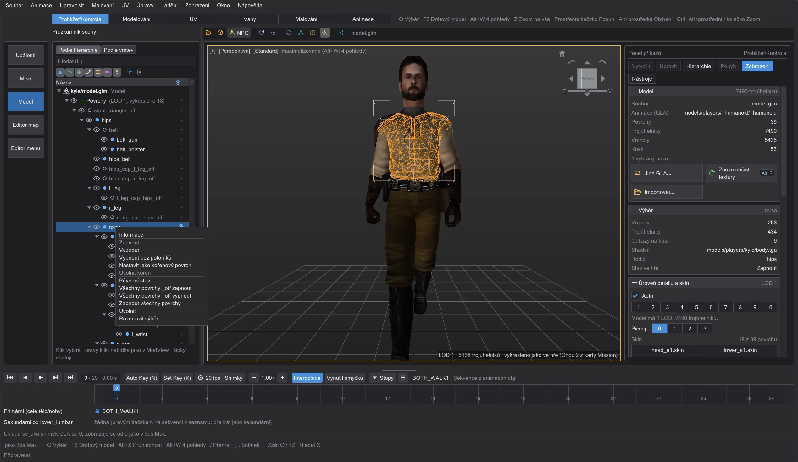
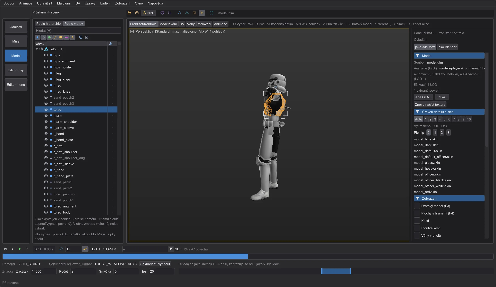
Sekundární sekvence se přehrává na horní části těla od lower_lumbar, jako SET_ANIM_UPPER ve hře (jiná počáteční kost: pravé tlačítko na kost). Interpolace prolíná mezi dvěma snímky jako hra.
Každý řádek průzkumníku scény ukazuje, co je zač: model, tag, kost, kořenová kost, přídavek, úchyt rigu, sekvence; povrch ukazuje svůj stav ve hře (tečka = zapnuto, kroužek = vypnuto, přeškrtnutý kroužek = vypnuto i s potomky). Klik na oko skryje řádek i s potomky, Ctrl nebo Alt+klik ukáže jen tento; Zobrazit vše je v nabídce pravého tlačítka a ve hledání akcí. Skryté řádky jsou šedé; výběr, malování a fotka je přeskočí. Jako Blender: H, Alt+H, Shift+H.
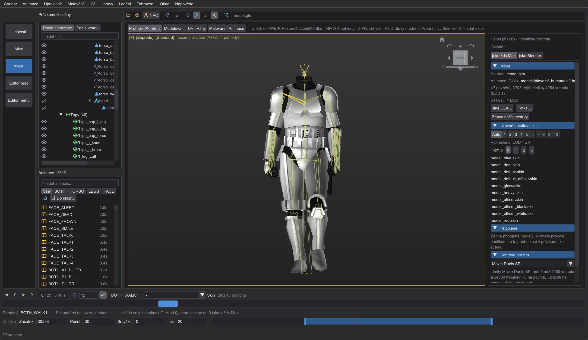
Panel příkazů#
Panel vpravo se řídí režimem ovládání. jako 3ds Max: Panel příkazů s kartami Vytvořit, Upravit, Hierarchie, Pohyb, Zobrazení a Nástroje a skupiny s plochými pruhy nadpisů. jako Blender: Vlastnosti se svislým sloupcem symbolů (Nástroj, Objekt, Modifikátory, Data, Kost, Vazby, Materiál - název je v bublině) a zaoblenými panely. Každá oblast karty si volí svou kartu - Prohlížet/Kontrola otevře Zobrazení nebo Objekt, Animace otevře Pohyb nebo Kost - a ukáže tam všechny své skupiny pod sebou. Ostatní karty ukazují svou část: v oblasti Prohlížet/Kontrola jsou pod Hierarchie připojené modely a pod Nástroje kontrola pro hru. Karta, která v aktuální oblasti nic nemá, je zašedlá.
V malém okně (nižším než asi 50 řádků textu, například při nejmenší velikosti programu) potřebují karty Panel příkazů jako text dvě až tři řady. Tam stojí jako 3ds Max jako symboly v jedné řadě, jako sloupec Vlastnosti jako Blender; název karty je v její bublinové nápovědě. Panel si tak ponechá místo pro své skupiny.
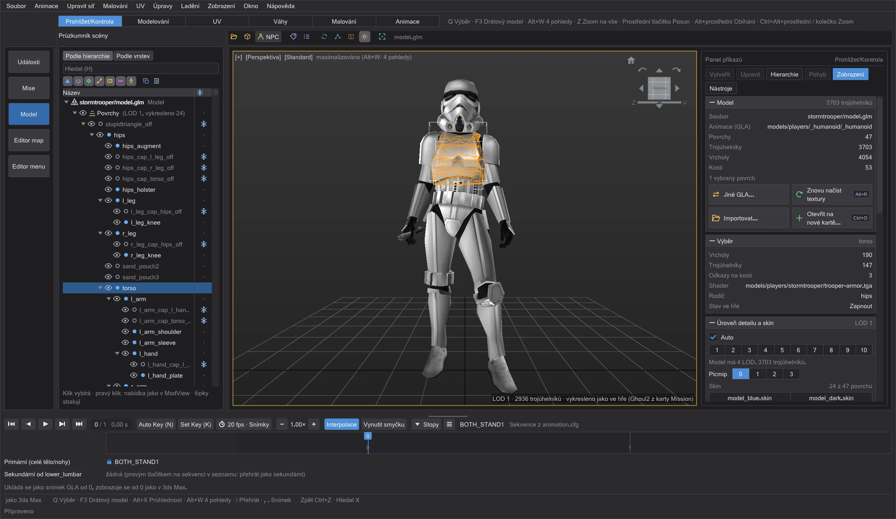
Každá skupina má stejnou podobu. Kliknutí na nadpis skupinu sbalí; vpravo v nadpisu je krátký údaj (trojúhelníky, vykreslené LOD, počet připojených modelů, nálezy kontroly - zeleně vše v pořádku nebo červeně s jejich počtem). Tlačítka stojí v mřížce dvou stejně širokých sloupců, každé se symbolem a - pokud existuje - s klávesou režimu ovládání jako malou klávesou; hlavní tlačítko skupiny je zvýrazněné barvou zvýraznění. Hodnoty jsou v tabulce (název vlevo, hodnota vpravo), volba jako LOD 1-10 nebo picmip 0-3 jako jedna spojená řada, rady v rámečku se symbolem informace. V úzkém panelu se nic neořízne: texty se zalomí a mřížka použije jeden sloupec.
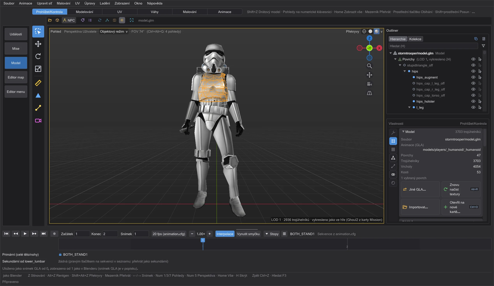
Šířka, oblasti a režim ovládání. Tažením hrany mezi pohledy a panelem panel rozšíříte nebo zúžíte (dvojklik obnoví výchozí šířku); program si šířku pamatuje. Oblasti karty - Prohlížet/Kontrola, Modelování, UV, Váhy, Malování, Animace - stojí jako jedna řada stejně širokých polí přes celou kartu, nad průzkumníkem, pohledy a panelem; vedle nich je krátká nápověda s klávesami a navigací myší v daném režimu ovládání pro tuto oblast. Samotný režim ovládání přepnete kliknutím na jako 3ds Max / jako Blender vlevo ve stavovém řádku karty, v nabídce záhlaví pohledu (Ovládání), v nastavení nebo hledáním všech akcí.
Záhlaví pohledu, ViewCube a gizmo#
Každý pohled má vlevo nahoře záhlaví jako nabídky popisků pohledů v 3ds Max - každé pole se pod myší rozsvítí a levým nebo pravým tlačítkem otevře svou nabídku. [+]: Maximalizovat pohled (Alt+W), Přiblížit vše (Z), co pohled ukazuje (mřížka G, podlaha, počátek, obalový kvádr, závorky výběru J, statistika 7, výškové pravítko, jednobarevné pozadí), podnabídka Kosti a kontroly (kosti, ploutve, normály, tagy, hledání prasklin, čísla vrcholů a trojúhelníků), ViewCube a zorné pole. [Perspektiva]: hledisko s klávesami 3ds Max (P, U, T, B, F, L) a Výchozí pohled (postava zepředu). [Standard]: stínování tohoto pohledu - drátový model (F3), plochy s hranami (F4), oboustranné, bílé textury, váhy vrcholů, silueta. Ve čtyřech pohledech si každý ponechá vlastní stínování, mřížku a statistiku. Stejné nabídky má kontextová nabídka pohledu a Hledat všechny akce (X) (X) najde každý přepínač; jeho popisek uvádí místo. Přepínače, které potřebují vybraný povrch (čísla, hledání prasklin), to v pohledu oznámí, dokud žádný nevyberete.
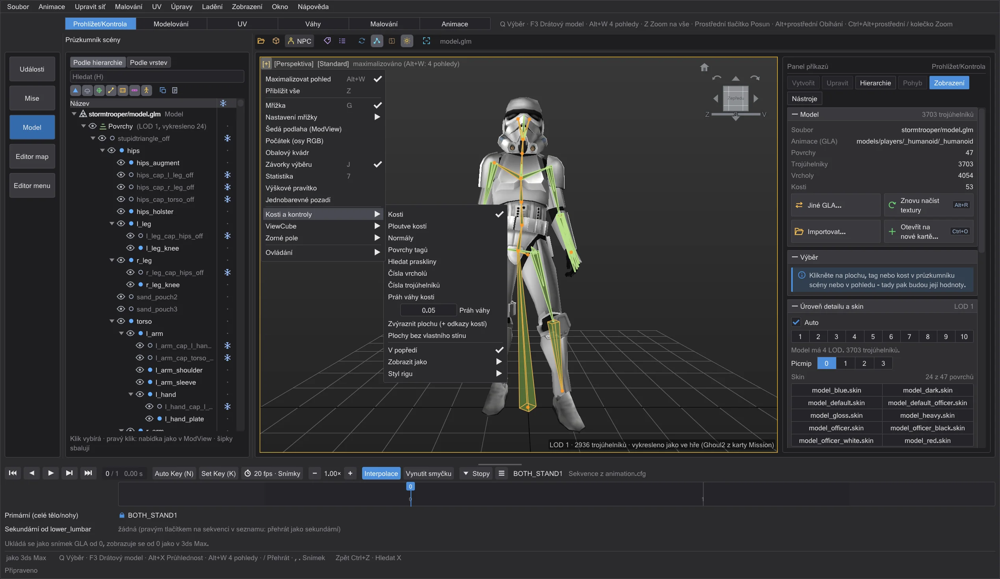
ViewCube vpravo nahoře v aktivním pohledu ukazuje, odkud se díváte, a chová se jako ten v 3ds Max. Má 26 cílů - 6 stěn, 12 hran, 8 rohů; cíl pod myší se rozsvítí a klepnutí otočí pohled krátkou animací tam. Projekce zůstává: perspektiva zůstane perspektivou; v ortografickém pohledu dá stěna svůj pohled (Zepředu, Shora ...), hrana nebo roh volný pohled Ortografický. Tažením krychle obíháte. Kompasový kruh pod ní nese S, V, J a Z: tažením kruhu otáčíte jen kolem svislé osy, klepnutím na písmeno se díváte odtud. Při pohledu přímo na stěnu vedou čtyři šipky k sousedním stěnám a dvě zahnuté šipky natočí pohled o 90 stupňů. Domeček vlevo nahoře je Domů: kamera přeletí k postavě zepředu a uprostřed. Pravé tlačítko nabízí Domů, Nastavit aktuální pohled jako Domů a Ortografický. Pohled nastavený jako Domů zůstává u postavy: JK Studio si ho pamatuje pro každou postavu, i po restartu. Obnovit Domů udělá z výchozího pohledu opět Domů. Krychle je poloprůhledná, dokud nad ní není myš. Postava se v .glm dívá ve směru -Y (hra ji otočí na +X), proto Zepředu ukazuje obličej - také po načtení postavy, po Alt+W a při obnovení pohledu; jako v 3ds Max leží sever za stěnou Zepředu. [+] > ViewCube vypne krychli nebo kompas, zobrazí krychli ve všech čtyřech pohledech a nastaví Úhel severu.
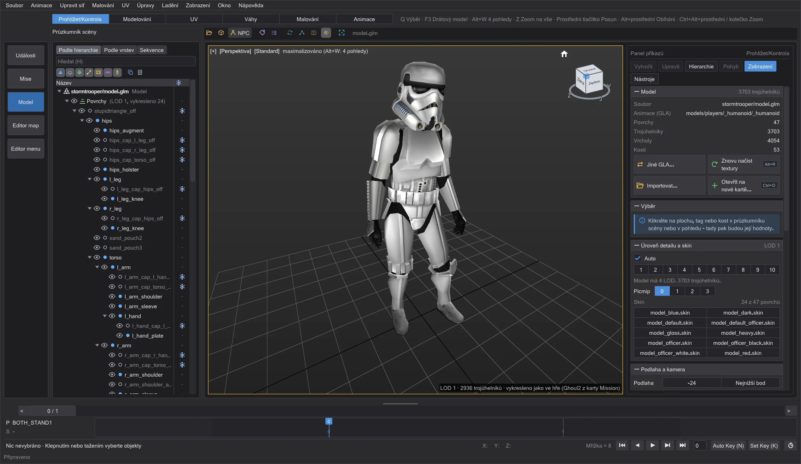
V režimu Blender je záhlaví uspořádáno jako 3D pohled Blenderu: vlevo nabídka Pohled (zobrazit výběr, zobrazit vše, perspektiva/ortografický, Hledisko s klávesami numerické klávesnice, Navigace s obíháním, natočením a opačnou stranou, čtyři pohledy), vpravo Překryvy a tři tlačítka Stínování pohledu - drátový model, plné, náhled materiálu - s rozbalovací nabídkou pro zadní strany a siluetu. Pod nimi je navigační gizmo: klepnutí na osu se dívá podél ní, druhé klepnutí z opačné strany, tažení obíhá (pohled podél osy se změní na perspektivu, jako Auto Perspective v Blenderu); pod ním přiblížení, posun, pohled kamery (bledý - karta Model nemá kameru scény) a perspektiva/ortografický. Numerická klávesnice funguje jako v Blenderu: 4/6/8/2 obíhají o 15 stupňů, Shift+4/6 natáčí, 9 opačná strana, Ctrl+1/3/7 zezadu, zleva a zespodu, Shift+Z drátový model, Ctrl+` gizmo.
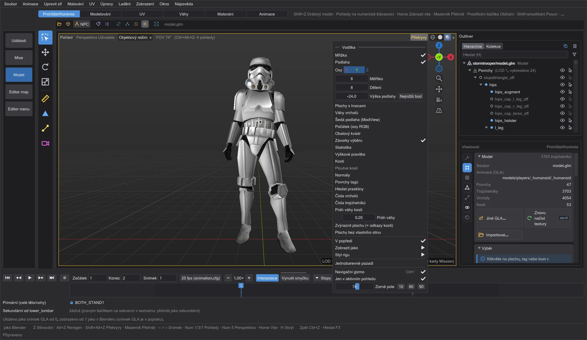
ViewCube je odvozen z WhiteoutDex (max_viewcube.h, licence BSD 3-Clause, Copyright (c) 2026 WhiteoutDex Contributors) a z WhiteoutFlakes (licence BSD 3-Clause s upozorněním na díla odvozená AI, Copyright (c) 2026 Fernando Sahmkow); navigační gizmo kreslí JK Studio samo - žádná grafika Autodesku ani Blenderu.
Podlahová mřížka#
Každý pohled od začátku ukazuje mřížku jako domovská mřížka 3ds Max: tenké čáry po rozteči mřížky, tmavší hlavní čáry a osy světa černě. V perspektivě leží na podlaze a končí po 7 čarách (Max: Perspective View Grid Extent); v pohledech Shora, Zepředu, Zleva ... leží v rovině pohledu, vyplní celý pohled a mění se s přiblížením - při oddálení se z hlavních čar stanou nové čáry, při přiblížení nikdy není jemnější než rozteč, jako v Max. Postava mřížku zakrývá. [+] > Mřížka (G) ji přepíná pro tento pohled. [+] > Nastavení mřížky nastavuje Rozteč mřížky (8 jednotek JKA jako mřížka editoru map), Hlavní čára každých N čar (8: hlavní čára každých 64 jednotek - výška hráče), Rozsah mřížky v perspektivě a Výška podlahy: výchozí -24, chodidla postavy JKA. 3ds Max a Blender dávají mřížku na Z = 0, postava JKA má ale počátek v bocích. Nejnižší bod položí podlahu pod nejnižší bod postavy v její póze (rekvizity s počátkem na podlaze: 0). Rozteč a hlavní čáry jsou i v nastavení (Karta Model: mřížka). Šedá podlaha z ModView (Šedá podlaha (ModView)) zůstává samostatným přepínačem a lze ji zobrazit spolu s mřížkou.
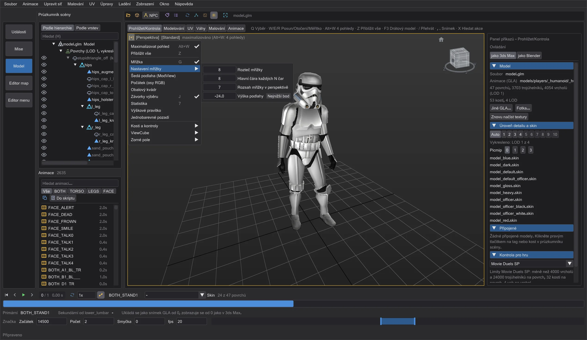
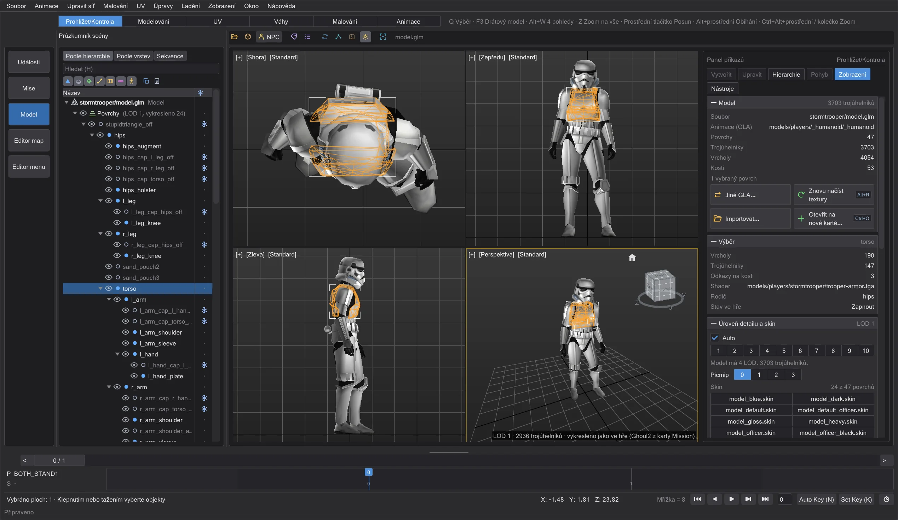
V režimu Blender mřížka vypadá a chová se jako překryvy Blenderu: podlaha k horizontu slábne a působí nekonečně, osa X je červená a osa Y zelená (Z modrá, když ji zapnete); v bočních pohledech se dělení mění s přiblížením. Překryvy > Vodítka má Mřížka (boční pohledy), Podlaha (perspektiva), Osy X Y Z, Měřítko a Dělení - každý pohled si drží své přepínače; měřítko a dělení jsou rozteč a hlavní čáry z výše uvedeného.
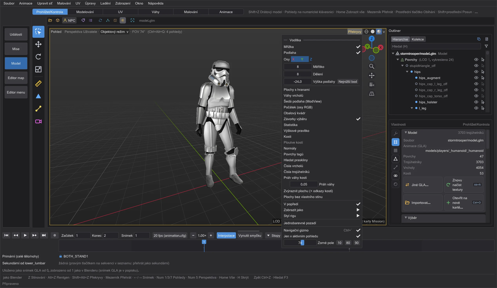
Navigace v pohledech#
Myš a klávesy pohybují pohledem přesně jako v programu, jehož režim je nastaven (Nastavení > Karta Model > Ovládání): jako 3ds Max nebo jako Blender. Řádek nad pohledy uvádí to nejdůležitější, každý příkaz je také v nabídce záhlaví pohledu ([název pohledu] > Navigace, v režimu Blender View > Navigace), v nabídce pravého tlačítka a ve hledání (X / F3). Posun hýbe scénou přesně s myší, zoom a obíhání drží bod uprostřed pohledu.
Jako 3ds Max
| Myš / klávesa | Co dělá |
|---|---|
| prostřední tlačítko | Posun: pohled sleduje myš. Se Shift jen ve směru prvního pohybu. |
| Alt+prostřední tlačítko | Obíhání kolem bodu zvoleného v Navigace > Obíhat kolem (z výroby výběr, bez výběru střed pohledu). Pohled Shora, Zepředu, Zleva ... se přitom stane volným pohledem Ortografický. Se Shift jen kolem osy použité jako první. |
| Ctrl+Alt+prostřední tlačítko | Zoom: nahoru blíž, dolů dál. |
| kolečko, [ ], Ctrl+= Ctrl+- | Zoom po krocích kolem bodu pod myší (Zoom kolem bodu myši (ortografický) / Zoom kolem bodu myši (perspektiva); vypnuto: kolem středu pohledu). |
| Z, Ctrl+Alt+Z | Přiblížit vše: Z přizpůsobí výběr (bez něj celou postavu) všem pohledům, Ctrl+Alt+Z celou postavu aktivnímu pohledu, Ctrl+Shift+Z celou postavu všem pohledům (Přiblížit vše ve všech pohledech (Ctrl+Shift+Z)) - jako ve 3ds Max; Znovu je tam Ctrl+Y. V režimu jako Blender zůstává Ctrl+Shift+Z Znovu. |
| Ctrl+Alt+Shift+Z, Alt+Shift+Z | Dvakrát blíž / dvakrát dál. |
| Alt+Z, Ctrl+P, Ctrl+R, Ctrl+W | Navigační režimy jako tlačítka vpravo dole v 3ds Max - Zoom, Posun, Obíhání, Zoom oblasti: táhněte levým tlačítkem, název režimu stojí dole v pohledu; pravé tlačítko nebo Esc jej ukončí. Obíhání ukazuje žlutý kruh: uvnitř se pohled otáčí volně, na jednom ze čtyř úchytů jen kolem jedné osy, vně se natáčí. Zoom oblasti: natažený obdélník pak vyplní pohled. |
| I | Posun ke kurzoru: bod pod myší se dostane do středu pohledu. |
| Shift+Z, Shift+Y | Vrátit / znovu provést poslední změnu aktivního pohledu (posun, zoom, otočení, ViewCube) - vlastní historie každého pohledu, nezávislá na Ctrl+Z. |
| T B F L P U, V | Pohledy Shora, Zdola, Zepředu, Zleva, Perspektiva, Ortografický; V otevře nabídku všech pohledů u kurzoru. |
| Alt+W, Alt+Home, Ctrl+Alt+V | Jeden pohled nebo čtyři; výchozí pohled (Domů ViewCube); zobrazit nebo skrýt ViewCube. |
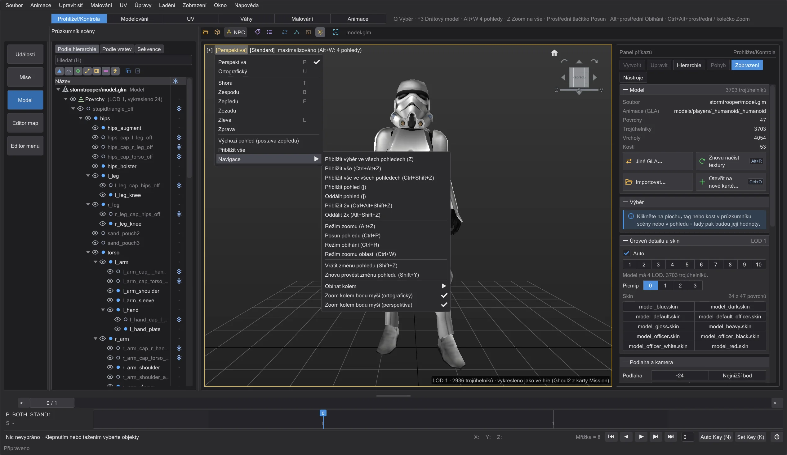
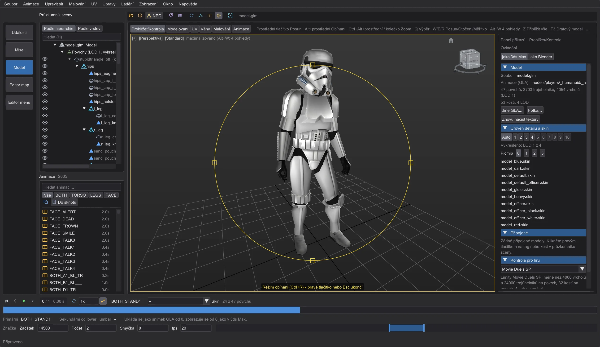
Jako Blender
| Myš / klávesa | Co dělá |
|---|---|
| prostřední tlačítko | Obíhání (točna): vlevo a vpravo kolem svislé osy, nahoru a dolů přes postavu - i přes pól. Pohled Zepředu, Zprava, Shora ... se přitom stane perspektivou (Auto Perspective). Držením Alt při tažení se přichytíte k pohledům podél os a úhlopříček. |
| Shift+prostřední tlačítko | Posun: pohled sleduje myš. |
| Ctrl+prostřední tlačítko | Zoom tažením nahoru a dolů (Dolly zoom Blenderu). |
| kolečko, Numpad + Numpad -, Ctrl+= Ctrl+- | Zoom po krocích: jeden krok dělí nebo násobí vzdálenost 1,2, kolem středu pohledu (Zoom na pozici myši zapnuto: k myši). |
| Alt+prostřední tlačítko | Tažení otočí pohled o čtvrt otáčky na sousední osový pohled (vpravo, vlevo, nahoru, dolů); klepnutí přesune bod postavy pod myší do středu pohledu. |
| Numpad 1 Numpad 3 Numpad 7, Numpad 5, Numpad 9 | Zepředu, Zprava, Shora (s Ctrl opačná strana), ortograficky a plynule; Numpad 5 přepíná mezi perspektivou a ortografickým pohledem ve stejném směru; Numpad 9 opačná strana. |
| Numpad 4 Numpad 6 Numpad 8 Numpad 2 | Obíhání po 15 stupních (4 a 6: kamera jde vlevo a vpravo, 8 a 2: nahoru a dolů); se Shift 4 a 6 pohled natáčejí, s Ctrl jej čtyři klávesy posouvají. |
| Numpad ., Home, Shift+C | Zobrazit výběr (nic nevybráno: nic se nestane), Zobrazit vše a Zobrazit vše včetně počátku. Směr zůstane. |
| `, Shift+B, Ctrl+Alt+Q | Kruhová nabídka Pohled u kurzoru (Zleva, Zprava, Zdola, Shora, Zepředu, Zezadu, Zobrazit výběr); Zoom oblasti - natáhněte obdélník, který pak vyplní pohled; čtyři pohledy: Shora, perspektiva, Zepředu a Zprava. |
| Gizmo | Gizmo vpravo nahoře: klepnutím na osu její pohled (při pohledu přesně podél osy dá střed opačnou stranu), tažením obíhání; tlačítka pod ním tažením přibližují a posouvají a přepínají mezi perspektivou a ortografickým pohledem. |
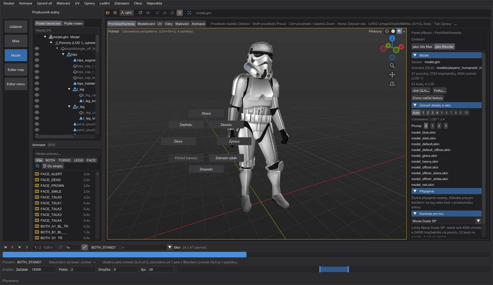
V Navigace jsou i nastavení: jako 3ds Max Obíhat kolem (Střed pohledu (Orbit), Výběr (Orbit Selected), Výběr podobjektů (Orbit SubObject), Bod pod myší (Orbit Point of Interest)) a dva přepínače Zoom kolem bodu myši (ortografický) / Zoom kolem bodu myši (perspektiva); jako Blender Obíhat kolem výběru a Zoom na pozici myši (oba z výroby vypnuté jako v Blenderu). Nepostaveno: SteeringWheels a režim procházení 3ds Max, chůze/let a trackball Blenderu, pohledy kamery.